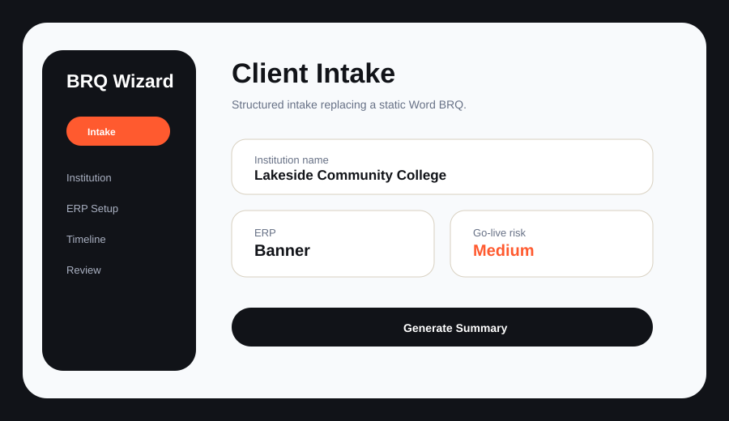

Featured Case Study · Real Project
AI-Assisted BRQ Intake Wizard
A guided intake experience designed to replace a static Word BRQ process, reduce pre-kickoff friction, and improve data quality before implementation begins.

Client Information
Start with data a PM actually needs before kickoff.
ERP + Integration
Only ask technical questions when the implementation path requires them.
Risk Signals
The tool should surface readiness gaps before they become kickoff problems.
Problem
Static BRQ documents created inconsistent answers, client confusion, PM cleanup, and readiness gaps before kickoff.
Approach
I mapped the intake workflow, identified high-friction questions, and designed a guided experience around the information PMs actually need.
Build
I created an AI-assisted HTML intake wizard that structured prompts, reduced ambiguity, and generated cleaner kickoff data.
Outcome
Leadership adopted the tool for team-wide rollout across PMs, turning a one-off process fix into a repeatable system.
| Product Skill | Evidence |
|---|---|
| Problem discovery | Identified recurring friction in the BRQ process before being asked to build anything. |
| User empathy | Designed for both clients who complete intake and PMs who consume the data. |
| Prioritization | Focused on the highest-friction intake moments instead of rebuilding the entire implementation process. |
| Shipping mindset | Built a usable HTML version that leadership could evaluate and roll out. |